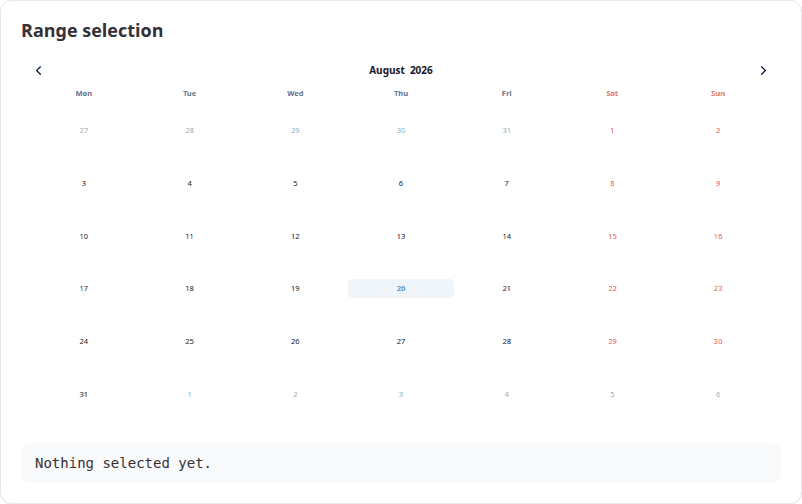
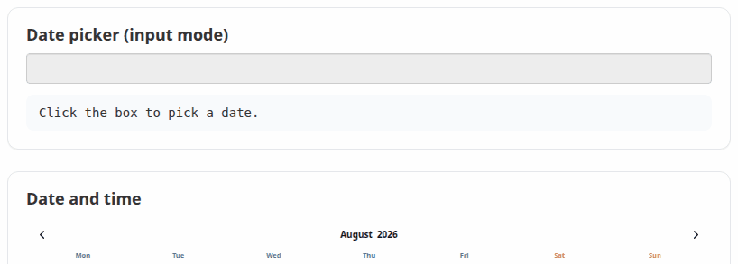
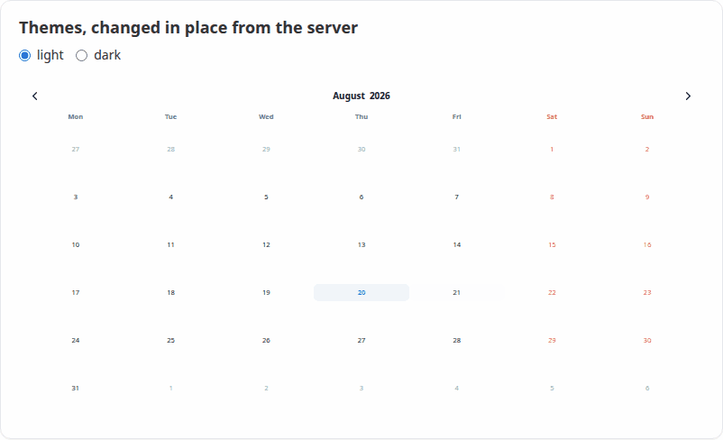

The code here is not run when the vignette is built, because it needs a running Shiny app. Both apps it draws on ship with the package, so you can run them before writing anything yourself:
# the smallest useful app, reproduced in full below
shiny::runApp(system.file("examples/minimal", package = "VanillaCalendar"))
# a tour of everything else on this page
shiny::runApp(system.file("examples/gallery", package = "VanillaCalendar"))The smallest app that works
There are three steps, and they are the same three as for any htmlwidget:
-
VanillaCalendarOutput("cal")in the UI, to say where the calendar goes. -
renderVanillaCalendar()in the server, to build it. - Read what the user picked from
input$cal_selected.
That is the whole app:
library(shiny)
library(VanillaCalendar)
ui <- fluidPage(
titlePanel("Pick a date"),
VanillaCalendarOutput("cal", height = "400px"),
textOutput("chosen")
)
server <- function(input, output) {
output$cal <- renderVanillaCalendar(VanillaCalendar())
output$chosen <- renderText({
if (length(input$cal_selected) == 0) "Nothing picked yet."
else format(input$cal_selected, "%A, %d %B %Y")
})
}
shinyApp(ui, server)Nothing above is specific to this widget except the two function names. What the calendar does is decided by the options you pass, and the structure stays as it is:
# let the user drag out a range
output$cal <- renderVanillaCalendar(
VanillaCalendar(list(selectionDatesMode = "multiple-ranged"))
)
# or make it a text box with a popup, for a form
output$cal <- renderVanillaCalendar(
VanillaCalendar(list(inputMode = TRUE), height = "auto")
)
# or add a time picker under the dates
output$cal <- renderVanillaCalendar(
VanillaCalendar(list(selectionTimeMode = 24), height = "440px")
)Reading what the user did
The widget reports its state through inputs named after the output
id. For an output called "cal":
| Input | Type | Set when |
|---|---|---|
input$cal_selected |
Date vector |
A date is clicked |
input$cal_selected_month |
integer, 1-12 | A month is chosen |
input$cal_selected_year |
integer | A year is chosen |
input$cal_displayed |
Date, first of the month |
The arrows are used |
input$cal_time |
character, e.g. "14:30"
|
The time changes |
input$cal_week |
list of week and year
|
A week number is clicked |
input$cal_ready |
TRUE |
The calendar has initialised |
input$cal_selected is always a Date vector,
and is Date(0) — not NULL, not
list() — when the user has selected nothing. That means the
obvious code works without guards:
output$summary <- renderText({
dates <- input$cal_selected
if (length(dates) == 0) return("Nothing selected.")
paste(length(dates), "date(s), the first being", format(min(dates)))
})
Selections are sent with event priority, so clicking the same date twice, or re-picking a date you had just cleared, reaches the server both times rather than being swallowed as an unchanged value.
A date picker instead of a calendar
Forms usually want a date field, not a permanent block of calendar.
That is inputMode:
VanillaCalendarOutput("when", height = "auto")
output$when <- renderVanillaCalendar(
VanillaCalendar(list(inputMode = TRUE, selectionDatesMode = "single"),
height = "auto")
)The widget renders a text box, opens the calendar as a popup when the
box is clicked, and writes the chosen date into it.
input$when_selected updates as usual.

Use height = "auto" for input mode, and
positionToInput to say where the popup goes:
"auto", one of "left", "center"
and "right", or a vertical and horizontal pair such as
c("bottom", "left").
Changing a calendar without re-rendering it
Re-running renderVanillaCalendar() builds a whole new
calendar: the selection is lost, the displayed month jumps back, and the
widget visibly flickers. To change something about a calendar that is
already on the page, use a proxy.
observeEvent(input$theme, {
vcSet(VanillaCalendarProxy("cal"), list(selectedTheme = input$theme))
})
The verbs map onto the library’s instance methods:
proxy <- VanillaCalendarProxy("cal")
vcSet(proxy, list(dateMin = input$start)) # apply new options
vcUpdate(proxy) # re-render with current options
vcShow(proxy) # show a popup calendar
vcHide(proxy) # hide it again
vcDestroy(proxy) # remove it entirelyOnly the parts you are actually setting are reset, so the theme
change above leaves the selection and the displayed month exactly as the
user left them. When you want to clear something you are not
setting, say so with reset — any of year,
month, dates, time,
locale:
# change the minimum date and drop the selection that no longer fits it
vcSet(proxy, list(dateMin = Sys.Date()), reset = list(dates = TRUE))Inside a Shiny module, build the proxy with the unnamespaced id; it uses the session to work out the full one:
calendarServer <- function(id) {
moduleServer(id, function(input, output, session) {
output$cal <- renderVanillaCalendar(VanillaCalendar())
observeEvent(input$go, vcHide(VanillaCalendarProxy("cal")))
})
}Reacting to another input
The two pieces together — options from R, applied by proxy — give the common “end date cannot be before start date” behaviour without any re-rendering:
server <- function(input, output, session) {
output$start <- renderVanillaCalendar(
VanillaCalendar(list(inputMode = TRUE), height = "auto")
)
output$end <- renderVanillaCalendar(
VanillaCalendar(list(inputMode = TRUE), height = "auto")
)
observeEvent(input$start_selected, {
vcSet(VanillaCalendarProxy("end"), list(dateMin = input$start_selected))
})
}Dropping down to JavaScript
Any option that takes a function takes one here too, through
htmlwidgets::JS(). Your callback runs in addition to the
built-in one, so the Shiny inputs above keep working:
VanillaCalendar(list(
selectionDatesMode = "multiple",
onClickDate = htmlwidgets::JS(
"function(self) { console.log(self.context.selectedDates); }"
),
onCreateDateEls = htmlwidgets::JS(
"function(self, dateEl) { dateEl.title = 'Custom tooltip'; }"
)
))The callback signatures, and the self.context fields
they can read, are in the upstream
reference.
Theming with bslib
selectedTheme = "system" follows the page rather than a
fixed choice, reading the attribute named by
themeAttrDetect. bslib writes data-bs-theme,
so:
VanillaCalendar(list(
selectedTheme = "system",
themeAttrDetect = "html[data-bs-theme]"
))